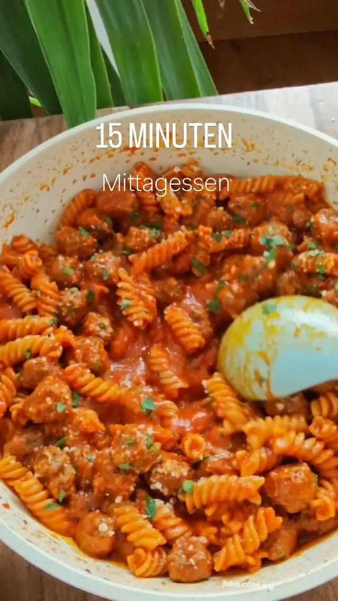

Cremige Fusilli mit Hackbällchen in Tomatensoße
Cremige Fusilli in einer würzigen Tomatensoße mit ganz vielen kleinen Hackbällchen – alles in nur einer Pfanne und perfekt für einen gemütlichen Abend zuhause.
- 4 Personen
- 19 Zutaten
- 4 Schritte
Zur Zubereitung Video ansehen ↗
Zutaten
- Für die Mini-Hackbällchen
- Für die Pasta
Zubereitung
- Hackfleisch mit den Gewürzen und Semmelbröseln vermengen, kleine Bällchen formen und in etwas Öl rundherum anbraten.
- Tomatenmark kurz mitrösten. Danach passierte Tomaten, Gemüsebrühe und Gewürze hinzufügen. Die ungekochten Fusilli direkt dazugeben und alles gut verrühren.
- Mit Deckel etwa 11–14 Minuten köcheln lassen und gelegentlich umrühren. Bei Bedarf etwas Wasser oder Brühe ergänzen.
- Zum Schluss Sahne und Parmesan unterrühren, kurz ziehen lassen und mit Petersilie servieren.